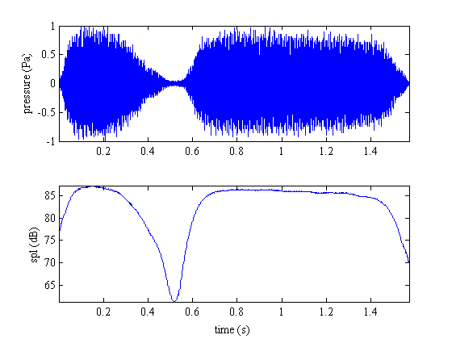
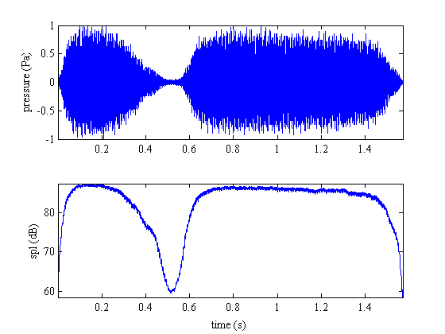
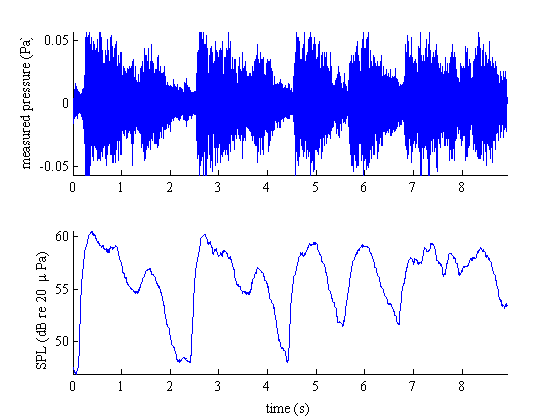

spl
spl returns sound pressure level in decibels for an input signal p_Pa in pascals. A reference pressure ref must be declared in units of pascals or specified as 'air' or 'water' to use standard reference pressures for those media.
Contents
Syntax
spl_dB = spl(p_Pa,ref) spl_dB = spl(p_Pa,ref,windowSize) spl_dB = spl(p_Pa,ref,windowSize,Fs)
Description
spl_dB = spl(p_Pa,ref) returns sound pressure level in decibels referenced to reference pressure ref in pascals. This usage returns a scalar value of spl_dB for the entire p_Pa signal.
spl_dB = spl(p_Pa,ref,windowSize) returns a moving SPL calculation along the window size specified by windowSize, where the units of windowSize are number of time indicies.
spl_dB = spl(p_Pa,ref,windowSize,Fs) returns a moving SPL, where windowSize is not indices of time, but _units_of time equivalent to units of 1/Fs.
Example 1: SPL of laughter.
Here we'll use the built-in laughter file and calculate a sound pressure level for the whole thing. Let's assume the units of y are in pascals and we'll use 20 uPa as the reference pressure. Turn on your speakers if you'd like to hear the audio signals we're analyzing.
load laughter
sound(y,Fs)
SPL = spl(y,20e-6)
SPL = 78.1283
That laughter is about 78 dB re: 20 {\mu}Pa. In case you can't remember the standard reference pressure for air, you could just as easily have typed
SPL = spl(y,'air')
SPL = 78.1283
and that's the same answer as specifying the reference pressure in pascals.
Example 2: Moving window.
Calculating the SPL of an entire signal is not terribly informative. You may wish to use a moving window for the calculation. First we specify the moving window in terms of the number of samples:
load train sound(y,Fs) SPL = spl(y,'air',501); % where 501 is the number of samples in the moving window. t = cumsum(ones(size(y))/Fs); % time vector figure subplot(2,1,1) plot(t,y) axis tight ylabel('pressure (Pa)') subplot(2,1,2) plot(t,SPL) axis tight ylabel('spl (dB)') xlabel('time (s)')
We can alternatively specify the moving window windowSize in units of time if we include the sampling frequency Fs.
load train SPL = spl(y,'air',0.010,Fs); t = cumsum(ones(size(y))/Fs); figure subplot(2,1,1) plot(t,y) axis tight ylabel('pressure (Pa)') subplot(2,1,2) plot(t,SPL) axis tight ylabel('spl (dB)') xlabel('time (s)')
Example 3: Accounting for microphone dynamics.
In the examples above, we've assumed that the recorded signal y is in units of pascals. However, an experimentalist is more likely to record voltages. If your signal is in units of volts or millivolts, the following approach may be more appropriate.
load handel sound(y,Fs) y; % (mV) recorded signal in millivolts. Fs; % (Hz) sampling frequency. t = 0:1/Fs:(length(y)-1)/Fs; % time vector. S = 14.1; % (V/mPa) microphone sensitivity. p_Pa = y/S; % (Pa) recorded signal in pascals, assuming y is in mV. spl_dB = spl(p_Pa,'air',.25,Fs); % this calculation specifies 1/4 second windowSize. figure subplot(2,1,1) plot(t,p_Pa) box off; axis tight; ylabel('measured pressure (Pa)') subplot(2,1,2) plot(t,spl_dB) box off; axis tight; xlabel('time (s)') ylabel('SPL (dB re 20 {\mu}Pa)')
Author Info
This function was written by Chad A. Greene in 2012, updated 2014.